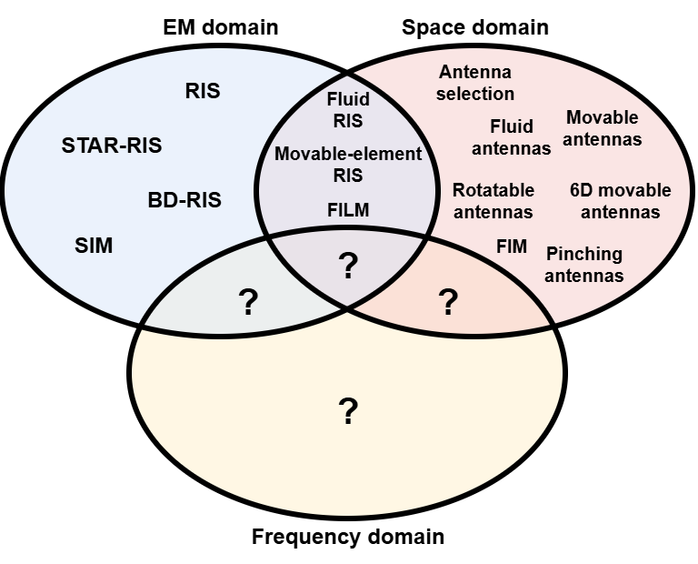
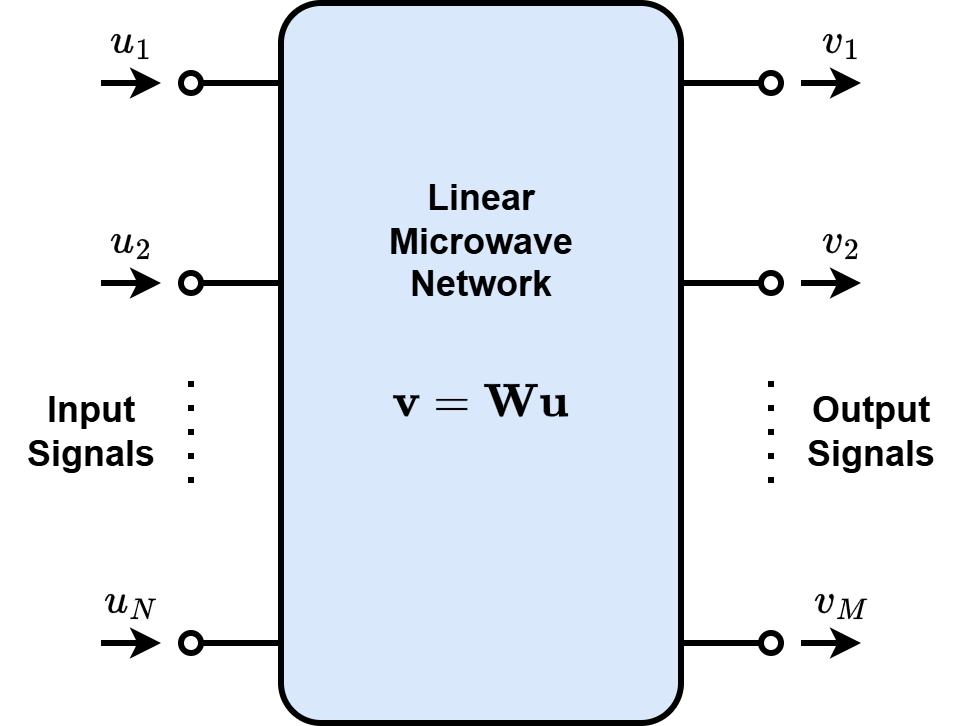
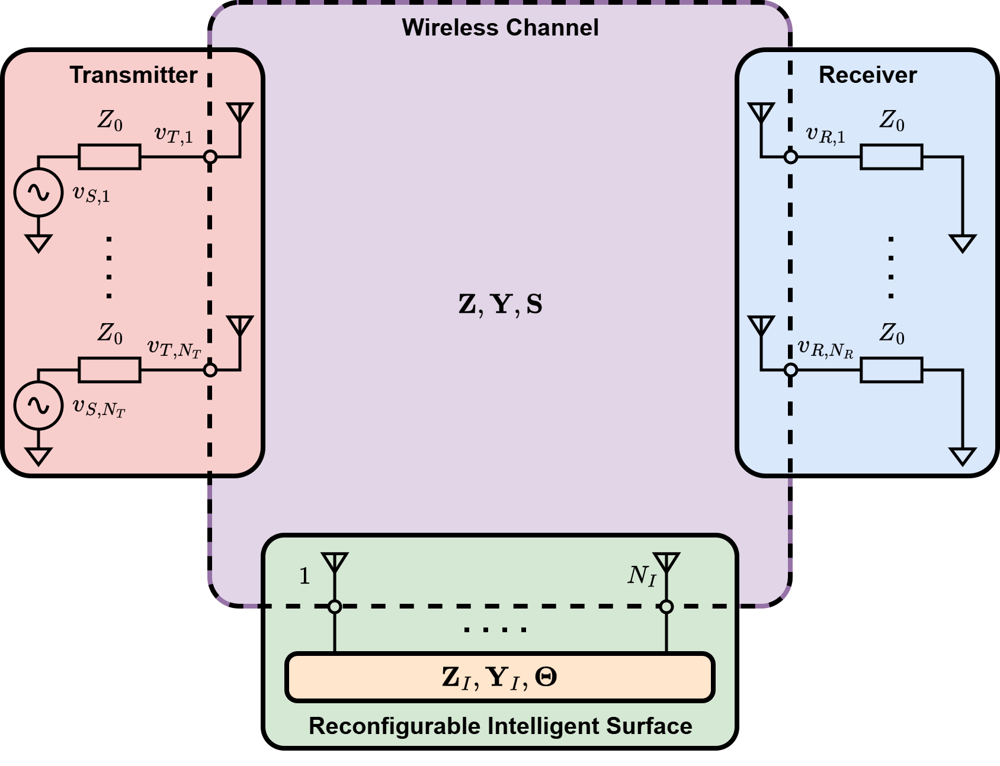
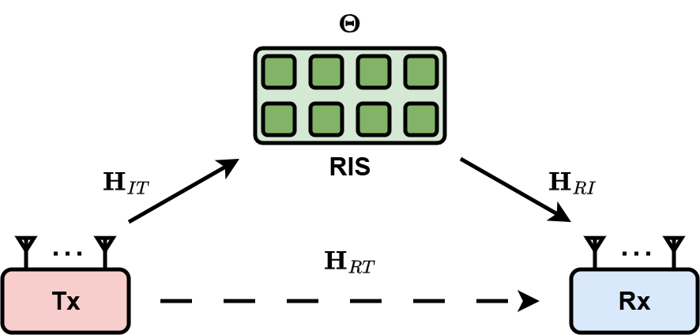

Smart radio environments (SREs) enhance wireless communications by allowing control over the channel. They have been enabled through reconfigurable intelligent surfaces (RISs) and through flexible antennas, which can be viewed as realizations of SREs in the EM domain and space domain, respectively. However, these technologies rely on electronically reconfigurable or movable components, introducing implementation challenges that could hinder commercialization.
To overcome these challenges, we propose a new domain to enable SREs, the frequency domain, through the concept of movable signals, where the signal spectrum can be dynamically moved along the frequency axis. Movable signals under non-line-of-sight (NLoS) conditions remain effective by leveraging reflections from surfaces made of uniformly spaced elements with fixed EM properties, denoted as fixed intelligent surfaces (FISs).

Analog computing has been recently revived due to its potential for energy-efficient and highly parallel computations. In this context, we explore analog computers that linearly process microwave signals, termed microwave linear analog computers (MiLACs), their fundamental capabilities, and their applications in signal processing and communications.
Our analysis shows that a MiLAC can efficiently compute the linear minimum mean square error (LMMSE) estimator and matrix inversion, with remarkably low computational complexity. Specifically, a matrix can be inverted with complexity growing with the square of its size.

Reconfigurable intelligent surface (RIS) is an emerging paradigm able to control the propagation environment in wireless systems. We develop accurate, physics-consistent models for RIS-aided wireless channels based on multiport network theory. These models account for electromagnetic (EM) effects that are commonly neglected, such as imperfect matching, mutual coupling, and structural scattering.
We are also interested in the global optimization and performance analysis of RIS under these physics-consistent models. Analytical and numerical results show that optimizing the RIS based on popular oversimplified models can lead to significant performance loss.

Reconfigurable Intelligent Surface (RIS) is a breakthrough technology enabling the dynamic control of the propagation environment in wireless communications through programmable surfaces. To improve the flexibility of conventional diagonal RIS (D-RIS), beyond diagonal RIS (BD-RIS) has emerged as a family of more general RIS architectures.
We are interested in the global optimization of BD-RIS through closed-form solutions and the development of efficient BD-RIS architectures. Since BD-RIS enhances the performance over D-RIS at the cost of additional circuit complexity, we are interested in characterizing the fundamental limits of this performance-complexity trade-off.